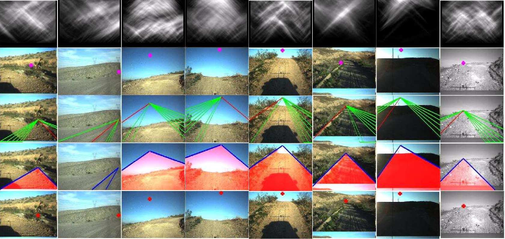

TS. Bùi Trung Hiếu
IT Lecturer, FE AI-Lab at FPT University, Hanoi Campus.
Specializing in Computer Vision and AI in Education.
Dr. Trung Hieu Bui is an IT Lecturer at FPT University in Hanoi, Vietnam, where he teaches Computing Fundamentals and leads the FE AI-Lab - a research group dedicated to applying artificial intelligence to real-world challenges.
With a Ph.D. in computer vision from Kyushu Institute of Technology, Japan, and 11 years at Viettel Group in UAV software development, R&D coordination, and intellectual property, his career bridges deep technical research and industry leadership, now channeled into bringing intelligent systems into teaching, learning, and broader real-world applications.

This research addresses the challenge of detecting vanishing points and estimating road regions from single images of unstructured roads, where conventional edge-based methods often fail due to the absence of clear lane markings or defined boundaries. A texture-based approach using Gabor wavelet filters and a novel local soft voting scheme was proposed, achieving both reduced computational cost and improved estimation accuracy. The method was validated on a dataset of 1,000 road images under diverse conditions of color, texture, lighting, and environment.
“The best way to predict the future is to create it.”